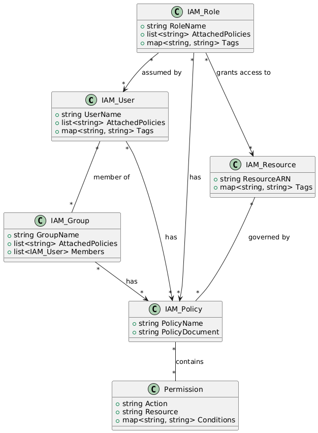

从 RBAC 到 ABAC, 权限管理的艺术
Posted on Sun 19 January 2025 in Journal
| Abstract | 从 RBAC 到 ABAC, 权限管理的艺术 |
|---|---|
| Authors | Walter Fan |
| Category | learning note |
| Status | v1.0 |
| Updated | 2025-01-19 |
| License | CC-BY-NC-ND 4.0 |
从 RBAC 到 ABAC, 权限管理的艺术
从 RBAC 和 ABAC
一个软件系统的权限控制就像情报机构的权限管理系统。你能查到哪些机密、能参与什么任务，都取决于权限分配的设计。
RBAC（Role-Based Access Control）— 按角色分配权限
在情报机构中，每个人都有明确的角色和职责。比如，007 是特工，M 是局长，Q 是技术专家。每个角色都有不同的权限：007 可以执行秘密任务，M 可以下达命令，Q 可以研发高科技装备。
在 AWS IAM 中，RBAC 也是类似的。你可以创建不同的角色（Role），比如“开发人员”、“运维人员”、“财务人员”等，然后为每个角色分配不同的权限。比如，开发人员可以访问 S3 存储桶，运维人员可以管理 EC2 实例，财务人员可以查看账单。
举个栗子：假设你是一家公司的 CTO，你希望开发人员可以访问代码库，但不能删除生产环境的数据库。这时候，你可以创建一个“开发人员”角色，赋予他们访问 S3 的权限，但不赋予他们删除 RDS 实例的权限。这样，开发人员就可以安心写代码，而不用担心误删数据库了。
RBAC 是情报机构中最传统的权限管理方式。就像每个人都有自己的头衔：
- 情报分析师能查阅机密报告。
- 特工只能接受特定任务。
权限的分配基于“角色”这一点，就像总部给每个工种划分了明确的界限，简单而高效。但如果任务复杂，光靠角色管理可能会显得有些笨拙。
ABAC（Attribute-Based Access Control）— 按属性分配权限
在情报机构中，有时候任务的执行不仅仅取决于你的角色，还取决于你的属性。比如，007 虽然是特工，但如果他正在执行一个涉及核武器的任务，那么他可能需要额外的权限，比如访问核武器库的权限。
在 AWS IAM 中，ABAC 也是类似的。你可以根据用户的属性（比如部门、职位、项目等）来动态地决定他们的权限。比如，你可以设置一个策略，规定只有“安全部门”的员工才能访问某个敏感的 S3 存储桶。
举个栗子：假设你是一家跨国公司的 CTO，你希望只有“美国分公司”的员工才能访问某个包含敏感数据的 S3 存储桶。这时候，你可以创建一个 ABAC 策略，规定只有“地区=美国”的员工才能访问这个存储桶。这样，即使其他分公司的员工有相同的角色，他们也无法访问这个存储桶。
ABAC 更像是现代化的智能系统，权限的分配基于多种“属性”，比如：
- 特工的资历（是否是顶级特工）。
- 任务地点（是否在巴黎）。
- 当前时间（是否是任务开始时间）。
ABAC 让权限管理灵活多变，就像情报机构对任务的动态适配，既能处理常规任务，也能应对突发状况。
AWS IAM 中的 RBAC 和 ABAC
AWS IAM 是 AWS 云端的“情报机关总部”，用来管理谁能干什么，什么时候干，在哪里干。它完美融合了 RBAC 和 ABAC 的理念，让权限分配既严谨又灵活。
1. RBAC 在 AWS：IAM 角色（Roles）
IAM 角色（Role）是 RBAC 的核心体现。
场景一：高级任务的分配
某情报机构让 S3 存储桶保存机密报告，只允许“情报分析师角色”访问。
- 定义 IAM Role：
json
{
"Version": "2012-10-17",
"Statement": [
{
"Effect": "Allow",
"Action": "s3:GetObject",
"Resource": "arn:aws:s3:::secret-reports/*"
}
]
}
- 分配给情报分析师，这样他们才能访问这些数据。
简单明了，但当角色数量增加时，就像情报机构里头衔太多，管理起来会显得复杂。
2. ABAC 在 AWS：基于标签（Tags）的灵活权限
ABAC 通过资源标签和用户属性动态管理权限。它就像情报任务管理系统，根据任务性质和特工属性实时分配权限。
场景二：任务自动匹配
某情报机构的特工只能访问与他们任务相关的 S3 存储桶。
- 为特工打标签：
{
"Key": "Mission",
"Value": "Paris"
}
- 为 S3 存储桶打标签：
{
"Key": "Mission",
"Value": "Paris"
}
- IAM 策略：
json
{
"Version": "2012-10-17",
"Statement": [
{
"Effect": "Allow",
"Action": "s3:*",
"Resource": "arn:aws:s3:::*",
"Condition": {
"StringEquals": {
"s3:ResourceTag/Mission": "${aws:PrincipalTag/Mission}"
}
}
}
]
}
这样，特工和任务资源标签一对上，权限就立刻生效。就像在“谍中谍”里，只有身份匹配的特工才能解锁任务文件。
特工王小胖在情报局
特工王小胖刚被情报局录用，负责云端任务的执行。老板对他说：“权限分配都走 AWS IAM，你的任务和权限已经安排好了。”
- 见习期：RBAC 的直接限制
小张尝试访问某机密报告，却发现权限被拒绝。
“抱歉，你只是初级特工，还没有情报分析师的权限。”
原来王小胖的角色是“菜鸟”, 按照 RBAC 的规则，他只有如下权限：
{
"Version": "2012-10-17",
"Statement": [
{
"Effect": "Allow",
"Action": [
"s3:GetObject",
"s3:PutObject"
],
"Resource": "arn:aws:s3:::general-info/*"
}
]
}
- 转正后：ABAC 的灵活解锁
王小胖被分配了巴黎奥运会的情报任务, 加入了巴黎行动小组，他的标签自动更新为 "team": "ParisMission"。
他发现，自己可以访问与巴黎任务相关的存储桶和资源了, 这里应用了 ABAC 的灵活权限匹配。
{
"Version": "2012-10-17",
"Statement": [
{
"Effect": "Allow",
"Action": [
"s3:GetObject",
"s3:PutObject"
],
"Resource": "arn:aws:s3:::secure-bucket/*",
"Condition": {
"StringEquals": {
"aws:PrincipalTag/team": "ParisMission"
}
}
}
]
}
权限管理的最佳实践
-
最小权限原则（Least Privilege）： 就像不给新人特工随便看绝密档案，权限越少越安全。
-
使用标签统一管理： 通过标签组织资源和用户，让 ABAC 的灵活性发挥得淋漓尽致。
-
定期审查权限： 防止某些“退休特工”还拥有不必要的权限。
-
结合 RBAC 和 ABAC： 用 RBAC 管理核心职责，用 ABAC 动态调整场景权限，两者相辅相成。
总结
RBAC 和 ABAC 是权限管理的两大流派，各自有自己的武功绝学。而 AWS IAM 不仅吸收了它们的精华，还为情报机构式的复杂任务管理带来了更多可能。 回顾一下大致的领域对象如下

@startuml
class IAM_User {
+string UserName
+list<string> AttachedPolicies
+map<string, string> Tags
}
class IAM_Group {
+string GroupName
+list<string> AttachedPolicies
+list<IAM_User> Members
}
class IAM_Role {
+string RoleName
+list<string> AttachedPolicies
+map<string, string> Tags
}
class IAM_Policy {
+string PolicyName
+string PolicyDocument
}
class IAM_Resource {
+string ResourceARN
+map<string, string> Tags
}
class Permission {
+string Action
+string Resource
+map<string, string> Conditions
}
IAM_User "*" -- "*" IAM_Group : member of
IAM_User "*" --> "*" IAM_Policy : has
IAM_Group "*" --> "*" IAM_Policy : has
IAM_Role "*" --> "*" IAM_Policy : has
IAM_Role "*" --> "*" IAM_User : assumed by
IAM_Role "*" --> "*" IAM_Resource : grants access to
IAM_Policy "*" -- "*" Permission : contains
IAM_Resource "*" -- "*" IAM_Policy : governed by
@enduml
本作品采用知识共享署名-非商业性使用-禁止演绎 4.0 国际许可协议进行许可。